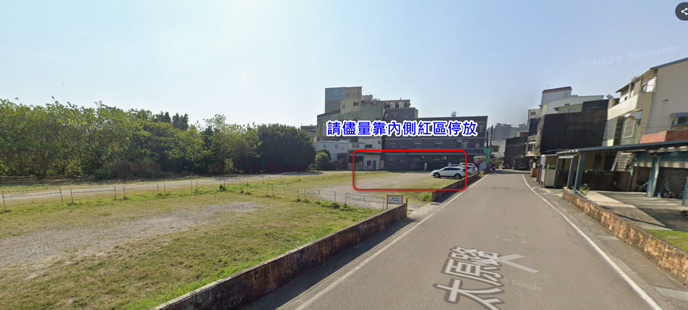
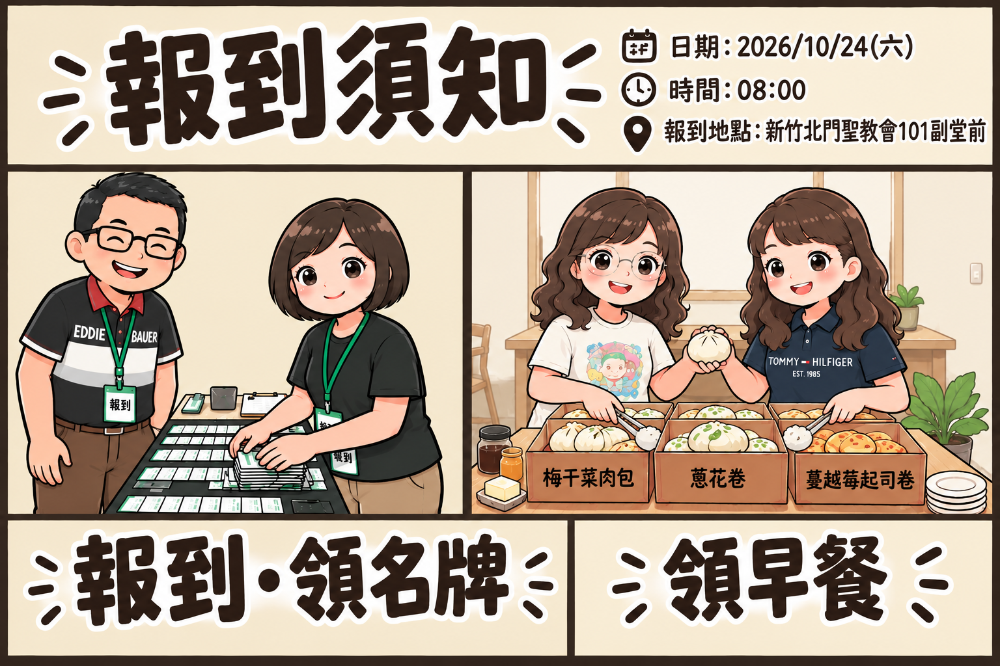
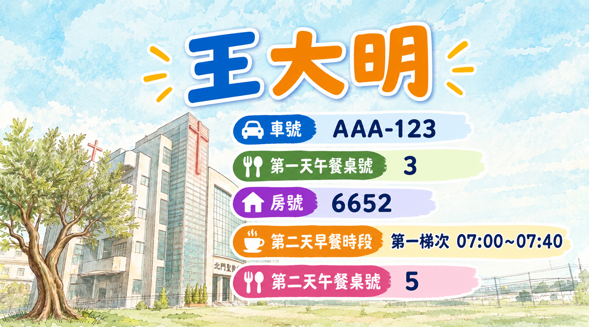
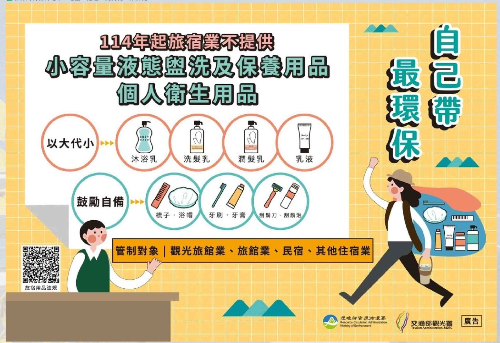

歡迎參加 2026 新竹北門聖教會・橄欖樹牧區退修會。
請先確認集合時間與地點，抵達後依序完成報到、領取名牌及早餐，並留意名牌上的活動資訊。
出發前請特別留意個人常用藥品攜帶與飯店環保政策規定，讓旅程更加平安舒適！
請先確認集合時間與地點，抵達後依序完成報到、領取名牌及早餐，並留意名牌上的活動資訊。
出發前請特別留意個人常用藥品攜帶與飯店環保政策規定，讓旅程更加平安舒適！
01
集合出發
請準時抵達集合地點，預留報到與整隊時間。
集合日期
2026 年 10 月 24 日（六）
集合時間
上午 08:00
集合地點
新竹北門聖教會・101 副堂前太原路 2 號
提醒：請依照通知時間準時集合；如有交通或集合相關疑問，請向活動負責同工確認。
02
停車資訊
請依車種停放於指定區域，並配合教會場地管理。

汽車停車汽車請停教會大型停車場。
機車停車機車請停教會機車停車區。
請務必遵守停車安排，勿將汽車停放於教會內籃球場，以免影響場地使用。
03
報到、領名牌、領早餐
抵達後請依序完成以下事項。

AI 報到與早餐領取須知示意圖｜依現場工作人員引導完成報到及領取。
第一步｜報到至報到處確認資料並完成報到。
第二步｜領取名牌領取個人名牌，並核對名牌上的資訊。
第三步｜領取早餐依現場指示領取早餐；如有特殊需求，請詢問工作人員。
04
名牌資訊
請確認名牌內容，活動期間可依名牌資訊辨識安排。

AI 名牌示意圖｜以當天發放實際名牌為準。
姓名確認姓名是否正確。
遊覽車編號確認所屬車輛資訊。
第一天午餐桌號依名牌標示前往指定桌次。
房號依名牌標示確認住宿房間。
第二天早餐時段請依名牌所列時段用餐。
第二天午餐桌號依名牌標示前往指定桌次。
領取名牌後，請立即核對以上資料。若資訊有誤或不清楚，請洽報到處工作人員協助確認。
05
行程規劃
詳細時程以主辦單位後續公告及現場通知為準。
Day 1｜集合・參訪・團契
10/24（六）| 開始時間 | 結束時間 | 行程內容 |
|---|---|---|
| 08:00 | 08:30 | 集合領早餐上車 |
| 08:30 | 10:30 | 交通至頭城濱海公園 （車程逾 1 小時，直接前往中餐點） |
| 10:30 | 11:10 | 頭城濱海公園散步、導覽 |
| 11:10 | 11:30 | 散步、拍照、廁所時間 |
| 11:30 | 11:45 | 集合上車，交通至中餐：東東快炒 |
| 11:45 | 13:15 | 第一天中餐｜東東快炒 午餐 |
| 13:15 | 13:30 | 前往頭城長老教會 |
| 13:30 | 15:30 | 拜訪參觀頭城長老教會，歷史與古蹟巡禮 |
| 15:30 | 16:00 | 交通至民宿｜品雲岫 |
| 16:00 | 16:30 | 民宿放行李、休息 |
| 16:30 | 17:30 | 健康操＋闖關活動 |
| 17:30 | 19:10 | 晚餐 Buffet 晚餐 |
| 19:10 | 19:30 | 整理場地 |
| 19:30 | 20:30 | 幸福之夜 |
Day 2｜敬拜・參訪・返程
10/25（日）| 開始時間 | 結束時間 | 行程內容 |
|---|---|---|
| 07:00 | 08:30 | 早餐（07:00／07:40 分流） 早餐 |
| 08:30 | 09:00 | 集合上車 |
| 09:00 | 09:45 | 交通前往礁溪長老教會 |
| 09:45 | 11:15 | 主日禮拜 |
| 11:15 | 12:00 | 教會建築導覽巡禮 |
| 12:00 | 12:30 | 牧師感謝、大合照、自由參觀 |
| 12:30 | 13:00 | 集合上車，交通至礁溪窯烤雞餐廳 |
| 13:00 | 15:00 | 吃中餐、伴手禮購買 午餐 |
| 15:00 | 17:00 | 回程新竹 |
提醒：行程可能因天候、交通或現場安排略作調整，請留意工作人員通知。
06
個人常用藥品與護理
隨身備妥個人常備藥品，照顧好健康才能享受美好行程。
暈車/暈船藥請在出發前 30 分鐘服用。
防蚊與防曬戶外活動請做好防蚊及防曬準備。
保暖外套/披肩因應氣候變化，建議隨身攜帶一件防風外套或保暖披肩，避免感冒著涼。
雨具（摺疊傘/輕便雨衣）宜蘭氣候多變，常有局部陣雨。
個人慢性病藥備足旅遊天數的藥量，並多帶 1-2 天份備用。
07
⚠️ 重要環保政策提醒
響應環保法規與永續旅遊，請留意客房備品政策。

政策提醒：配合環境部規定，全台飯店、旅館及民宿全面禁止在客房內「主動」提供一次性衛生用品。
🧳 個人行李檢查清單（必備「六小組」個人衛生用品）：
潔牙用品牙刷、牙膏 🪥
理容用品梳子、刮鬍刀、刮鬍泡 🪒
防護用品浴帽 🧼
其他用品其他個人盥洗保養用品。
💡 飯店仍會提供的項目（不需刻意自備）：
飯店標配大浴巾、小毛巾、壁掛式洗髮精/沐浴乳、吹風機、拖鞋。